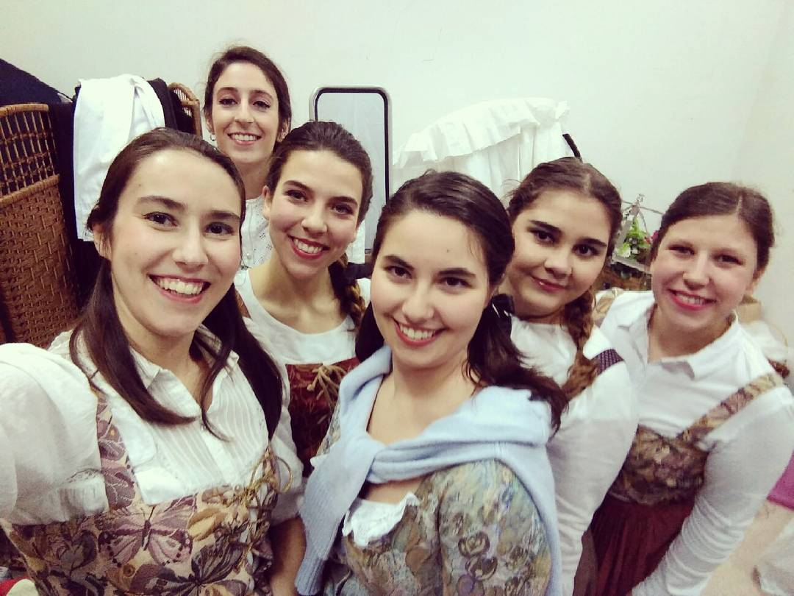
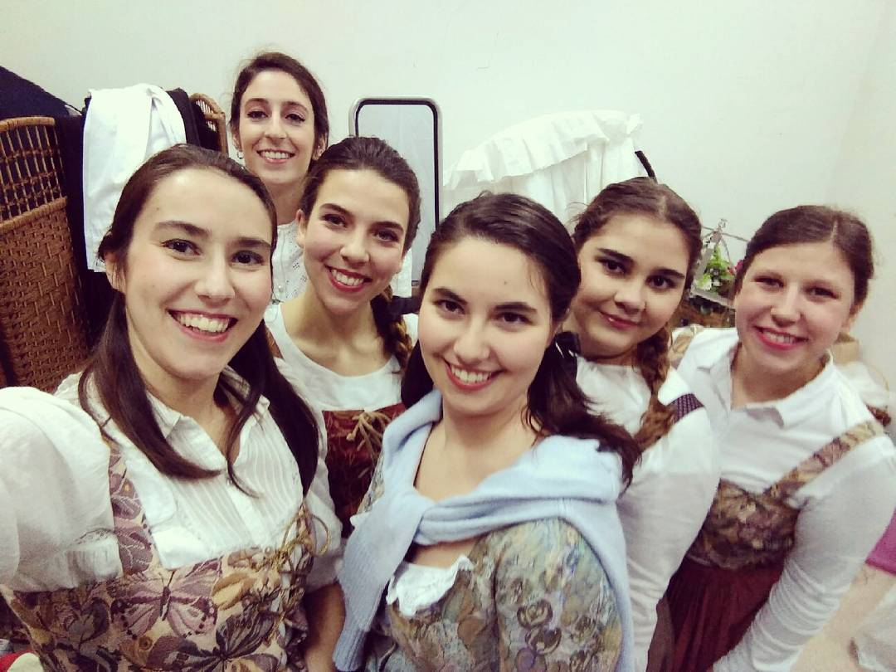

Algumas atuações
Durante os meus anos como estudante de música, tive audições de violino, orquestra, canto e coro.
No fim de cada período tínhamos as audições finais e provas de instrumento ( no meu caso foi o violino do 1º ao 9ºano e depois troquei para canto no 10ºano até hoje).
As atuações que mais me marcaram foram as da universidade, onde cantamos desde excertos de óperas e lieder, a oratórias e árias antigas. É muito divertido fazer assim atuações mais teatrais porque se interage muito mais com os colegas e também com o público.
Para um(a) cantor(a), atuar é vestir sempre uma personagem próxima ou não de nós. É um desafio constante e algo que dá muito trabalho, mas que no fim de cada atuação nos enche sempre o coração, mesmo quando não estamos 100% safisfeitos (as) con o nosso trabalho. Um(a) artista tem sempre espaço para melhorar alguma coisa.
 



Tenho imensas fotos de várias atuações, mas optei apenas por estas duas porque são totalmente diferentes, tal como os seus contextos.
Mais à esquerda estou a cantar num coro de câmara. Chama-se assim porque tem apenas algumas vozes por cada naipe, (3/4 pessoas por naipe). Um naipe é um grupo de um som/instrumento específicos. Na orquetra temos, por exemplo, nas cordas os naipes dos violinos, violas, violoncelos e contrabaixos. Nos coros a divisão mais básica e recorrente é sopranos, altos, tenores e baixos. Eu estava no naipe das sopranos.
Na foto da direita era um concerto de estúdio de ópera em que as nossas personagens eram camponesas alemãs, portanto só cantamos peças em alemão. Mesmo as vestimentas já chamam mais à atenção porque é uma atuação focada em ópera.